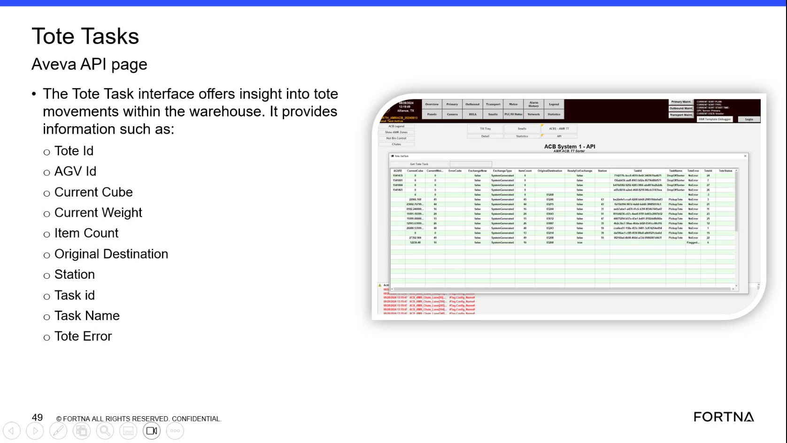

| Procedure ID | proc_check_tote_task_exchange_type_priority_original_destination_ready_for_exchange_aveva_hmi_v1 |
|---|---|
| Title | Check Tote Task Exchange Type, Priority, Original Destination, and Ready-for-Exchange Status in AVEVA HMI Tote Tasks |
| Procedure Type | diagnostic |
| Primary Role | operator |
| Support Safe | Yes |
| Capability Tags | sorter_item_or_scan_state |
| Access Surface | aveva_hmi |
| Audience Roles | operator |
| Failure Pattern Tags | None |
| Validation Status | needs_sme_review |
| Merge Status | source_finalized |
Use the AVEVA HMI Tote Tasks / Tote Task interface to identify the current tote task’s exchange type, priority, original destination, and whether it is marked “ready for exchange,” along with key identifiers (Tote Id, AGV Id, Station, Task id, Task Name) and any Tote Error value.
When you need to verify what exchange type a tote task is performing and whether it is ready for exchange, including the tote/task identifiers and any tote error state, using the live AVEVA HMI Tote Tasks interface.

Responsible role: operator
Instruction:
Open the AVEVA HMI screen that shows the “Tote Tasks” / “Tote Task” interface.
Expected result:
The AVEVA HMI Tote Task interface is visible and ready for reading the tote/task fields and exchange-related status.
Stop or Escalate If:
Responsible role: operator
Instruction:
On the Tote Task interface, locate and read the tote task identifiers/fields: Tote Id, AGV Id, Original Destination, Station, Task id, Task Name, and Tote Error.
Expected result:
You have recorded the current values shown for Tote Id, AGV Id, Original Destination, Station, Task id, Task Name, and Tote Error (empty/normal or populated with an error value).
Stop or Escalate If:
Responsible role: operator
Instruction:
On the same Tote Task interface, check the exchange-related fields: exchange type, whether the exchange is marked as priority, and whether it is “ready for exchange.”
Expected result:
You have recorded the current exchange type, the priority indicator (priority vs not), and the ready-for-exchange status shown on the Tote Task interface.
Stop or Escalate If:
Responsible role: operator
Instruction:
If the interface indicates an AUV behind it is ready to go, confirm which station(s) are listed for that tote task and whether it is associated with the “sorter task UID.”
Expected result:
You have recorded the station(s) listed for the tote task and the value (if shown) of the “sorter task UID” association.
Responsible role: operator
Instruction:
If Tote Error is populated (non-empty / not “no error”), note the error value and the associated Tote Id / Task Name so support can reference the exact tote task.
Expected result:
You have captured Tote Error value along with Tote Id and Task Name for the tote task showing the error.
Stop or Escalate If:
Responsible role: operator
Instruction:
Stop when you have recorded the current Tote Id, Task Name, exchange type, priority flag, ready-for-exchange status, Original Destination, Station, and Tote Error (if present).
Expected result:
All required items are recorded for the current tote task: Tote Id, Task Name, exchange type, priority flag, ready-for-exchange status, Original Destination, Station, and Tote Error (if present).